Click here to start
Table of contents
Chapter 9: Virtual Memory
Slide 2
Objectives
Background
Background (Cont.)
Slide 6
Virtual Memory That is Larger Than Physical Memory
Virtual-address Space
Shared Library Using Virtual Memory
Demand Paging
Basic Concepts
Valid-Invalid Bit
Page Table When Some Pages Are Not in Main Memory
Page Fault
Steps in Handling a Page Fault
Aspects of Demand Paging
Instruction Restart
Performance of Demand Paging
Performance of Demand Paging (Cont.)
Demand Paging Example
Demand Paging Optimizations
Copy-on-Write
Before Process 1 Modifies Page C
After Process 1 Modifies Page C
What Happens if There is no Free Frame?
Page Replacement
Need For Page Replacement
Basic Page Replacement
Slide 29
Page and Frame Replacement Algorithms
Graph of Page Faults Versus The Number of Frames
First-In-First-Out (FIFO) Algorithm
FIFO Illustrating Belady’s Anomaly
Optimal Algorithm
Least Recently Used (LRU) Algorithm
LRU Algorithm (Cont.)
Use Of A Stack to Record Most Recent Page References
LRU Approximation Algorithms
Second-Chance (clock) Page-Replacement Algorithm
Enhanced Second-Chance Algorithm
Counting Algorithms
Page-Buffering Algorithms
Applications and Page Replacement
Allocation of Frames
Fixed Allocation
Priority Allocation
Global vs. Local Allocation
Non-Uniform Memory Access
Thrashing
Thrashing (Cont.)
Demand Paging and Thrashing
Locality In A Memory-Reference Pattern
Working-Set Model
Keeping Track of the Working Set
Page-Fault Frequency
Working Sets and Page Fault Rates
Memory-Mapped Files
Memory-Mapped File Technique for all I/O
Memory Mapped Files
Shared Memory via Memory-Mapped I/O
Shared Memory in Windows API
Allocating Kernel Memory
Buddy System
Buddy System Allocator
Slab Allocator
Slab Allocation
Slab Allocator in Linux
Slab Allocator in Linux (Cont.)
Other Considerations -- Prepaging
Other Issues – Page Size
Other Issues – TLB Reach
Other Issues – Program Structure
Other Issues – I/O interlock
Operating System Examples
Windows
Solaris
Solaris 2 Page Scanner
End of Chapter 9
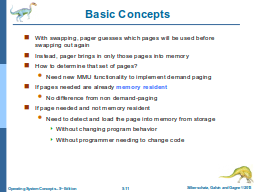
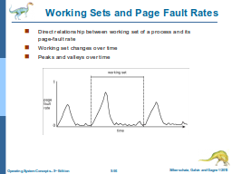
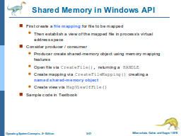
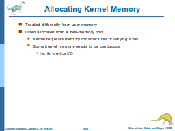
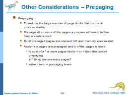
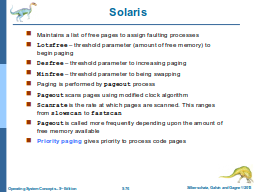
 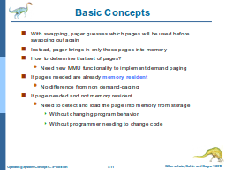
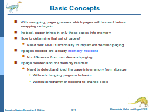


 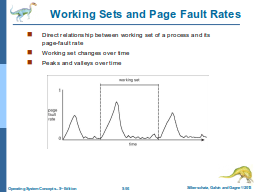
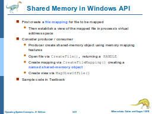
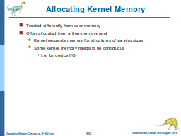
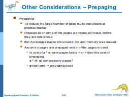
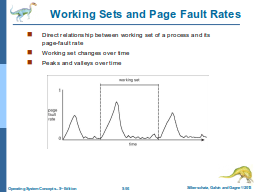
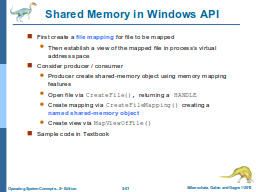
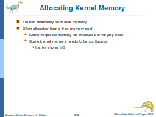
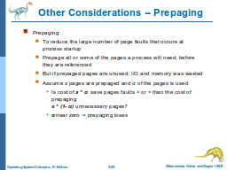
 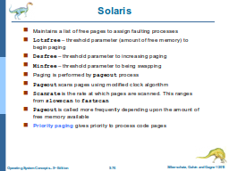
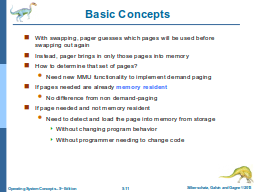
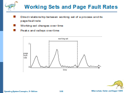
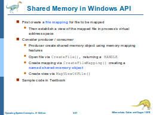
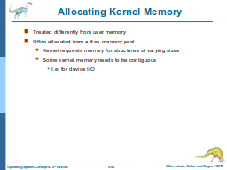
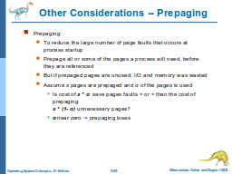
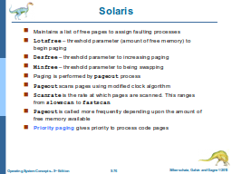
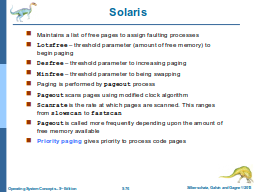
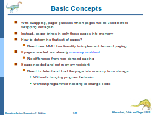
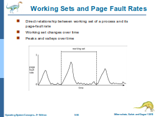
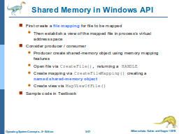
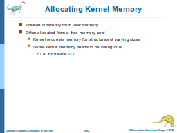
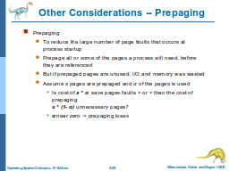
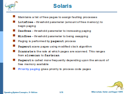